OVERVIEW
This is a team project to redesign the website of New York Cares. To understand our users, we implemented multiple research methods regarding interview, observation, questionnaire, affinity diagram, and competitive review. Also, we conducted testings, such as card sorting, tree testing, and site maps. Based on the result of experiments, we designed the low-fidelity wireframes and created the high-fidelity prototypes in the end.
My most significant growth from this project is conducting multiple design methods through usability experiments, which was practical in industry. I learned the experience of how to plan the interview protocol and observation. Through the teamwork process, we verified and iterated our design strategy through the feedback of the testings. Besides, I took charge of designing the final presentation Sliders and created the high-fidelity prototypes of homepages for desktop and mobile.
OBJECTIVE
Redesign website, conduct usability improvement
BACKGROUND
New York Cares is a non-profit organization. They provide volunteer services to aid New Yorkers with education, nutrition, unemployment, etc. The website needs significant modification and pruning, including improved information architecture to promote discoverability, shorter menus, design consistency, improved search functionality, and an enhanced mobile experience.
We found out several usability problems through the design process while we narrowed down the redesign scope to the most crucial issue -- the register process. The process is vital because every user needs to go through if they plan to participate a volunteer event.
DESIGN PROCESS
We decided to follow the following Design Thinking process: research on empathy, define the testing, ideate the wireframes, and deliver the prototypes. To make sure that our design decisions were supported by user research and feedback.
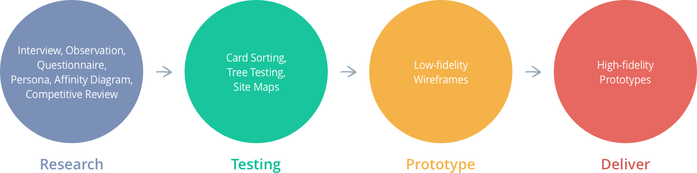DISCOVER THE NEED
The goal of empathizing is to gain a deeper understanding of our website’s users. To genuinely comprehend the current website’s pain points to users, I decided to combine methods, the interview protocol, and the observation plan.
I collected four users’ feedback in total: three of them live in New York now, and only one based in Taiwan. All participants are in the age group of 25-30, with full-time jobs, working on business days, and have some prior volunteer experiences. There are two ways to give the interview, half of them were sharing screen to take the observation on Skype, and others were being observed in the face. Besides, I tested the NY Cares website three times on a desktop browser (Full-screen resolution: 1280x800), and only one time on a mobile device (iPhone SE resolution: 320x568). In this observation group, I found out that their intuition of how they were used to operate search tools on interfaces greatly influence them.
An example of interview questions and notes.
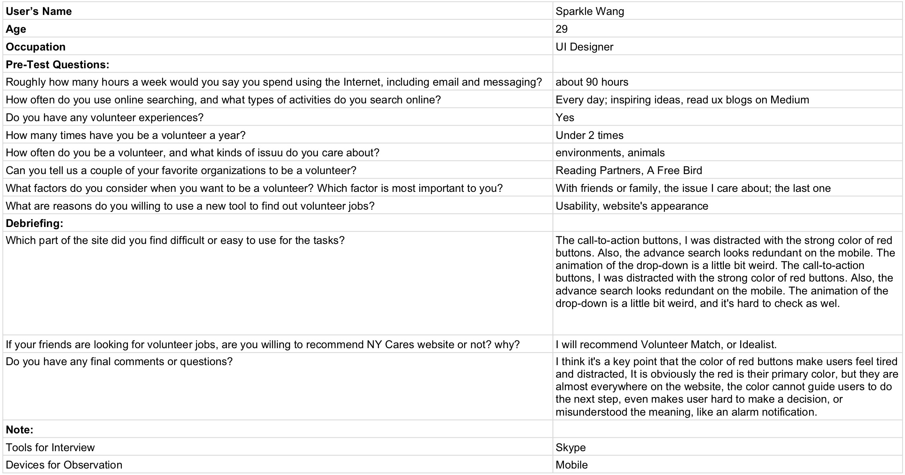RESULTS
The result helps me to make the priority and the plan of the website redesign, and I decided to focus on the search features and the visual branding of the home page. Then, if the time and the resource enough, I deal with the classification of the menu and their detail pages as well.
PERSONA
I laid out the persona methodology and created a provisional persona of a potential user of the New York Cares website based on previous interviews and observations. This persona was created with a hypothetical scenario and not entirely research-based. Still, it was something that I came back to throughout my project to guide my design decisions and priorities.
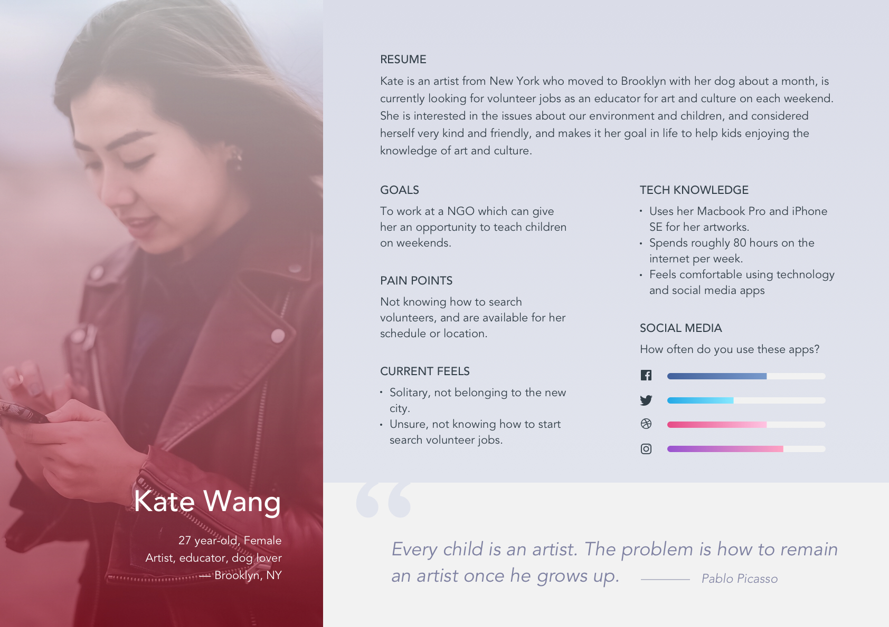 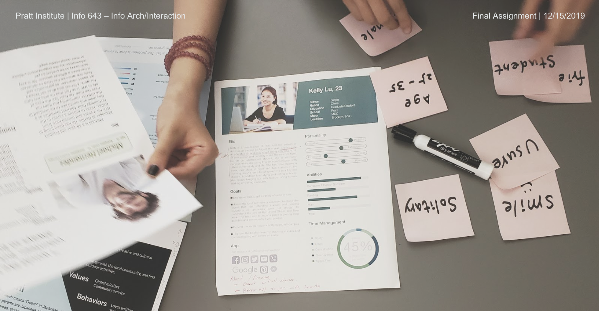AFFINITY DIAGRAM
Then, we created the affinity diagram to find out the intersection of our personas. The result showed that our final persona is an international student. Here are some key features of this character.
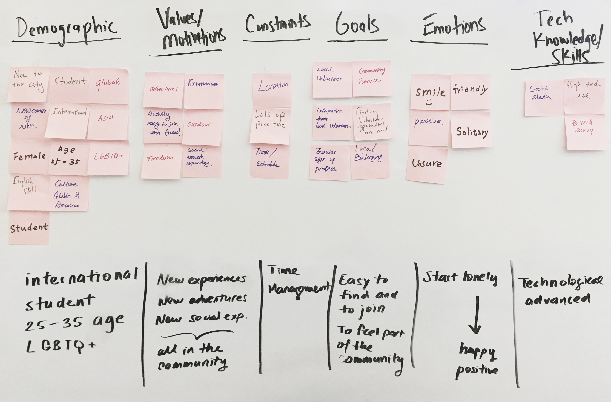COMPETITIVE REVIEW
Besides, we searched the competitor of volunteer websites on the internet and made the following review table on their home pages, navigation, organization, search, appearance, and mobile-friendliness.
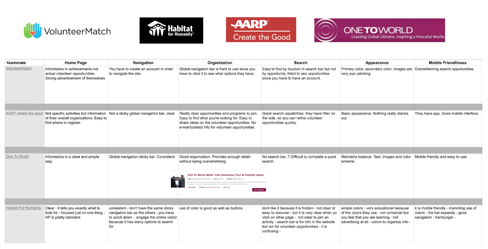DEFINE THE TESTING
We created the card sorting to narrow down all the options on the menu. Then we created a new list with new categories based on the testing result. After analyzing the results of the open card sort study, we realized that users found the existing terminology confusing, as well as the number of options from the dropdown in the navigation bar overwhelming. We decided to change the wording on both the navigation bar and some of the options in the dropdown based on the feedback we received from the open card sort study.
Card Sorting
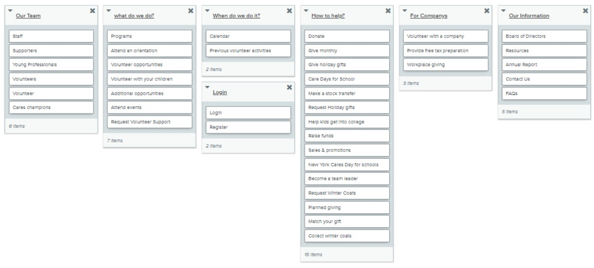Similarity Matrix
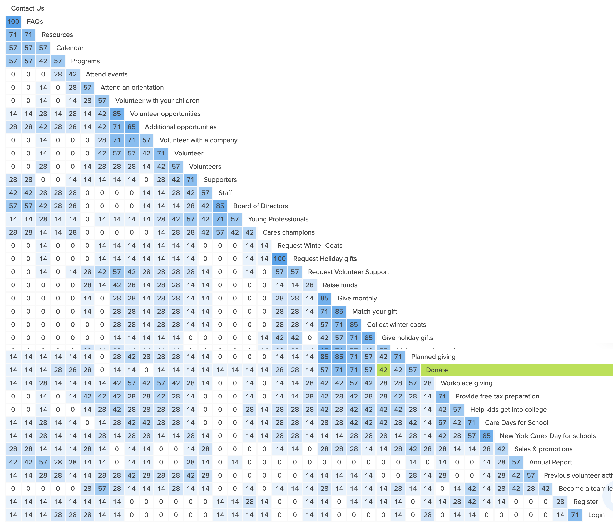Dendrograms
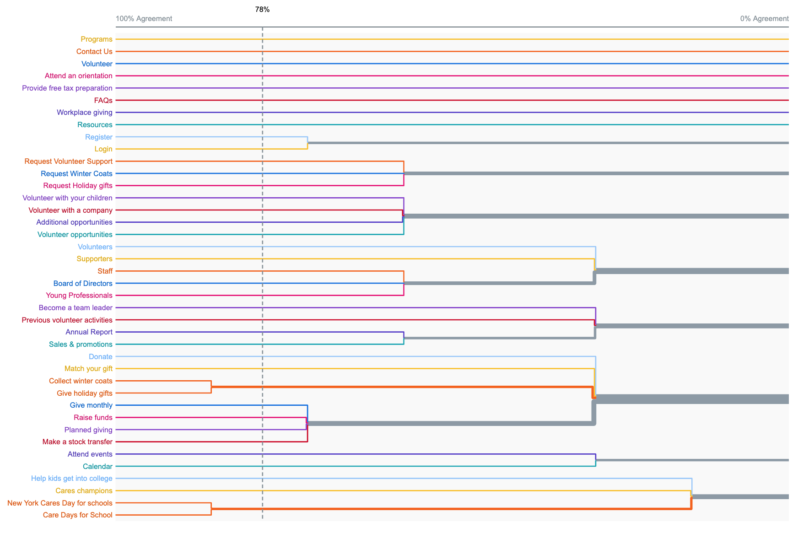After analyzing the data from the open card sort study and modifying the terminology, we created a tree test with five exercises to test our new proposed information architecture(IA). Ultimately, based on the feedback received from both the open card sort study and the tree test, we concluded that there were two main issues with the existing IA that we needed to tackle. The first was the terminology. For example, they use terms like “Cares Champions” and “Become a Team Leader,” which makes sense if you’re familiar with the organization, but for someone that is first visiting, these terms don’t make sense. Second, the amount of content in the main navigation bar dropdown made the site difficult to navigate because of the overload of content. Our new site map reflects new and engaging terminology, as well as a condensed amount of options that give a seamless feel to the dropdown menus.
Tree Testing

Site Maps
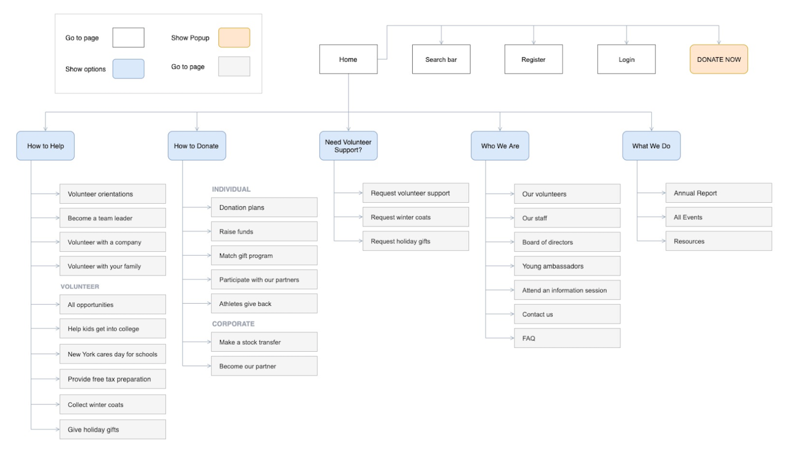IDEATE THE WIREFRAMES
Based on the site maps, I designed this low-fidelity wireframs for usability testing.
After the usability testing, I decided to tackle the three UX problems on the New York Cares Website. My recommendations for the usability problems present below.
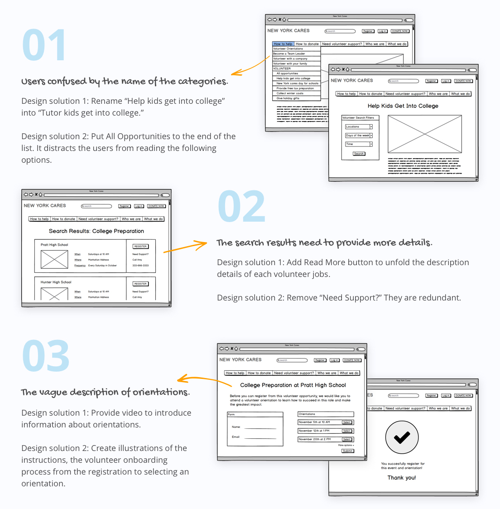While conducting the usability testing, I found out that the question for the user task should avoid providing the relevant description to user interfaces. It simplifies the examine, and users may select an option without any consideration. Besides, In the end of the registration process, the success page, we can give a hint to notify users that the system automatically sends an email copy coincidently.
DELIVER THE PROTOTYPES
I presented my solution with Adobe XD software to create hi-fi mockups of my proposals and create clickable prototypes for desktop and mobile.
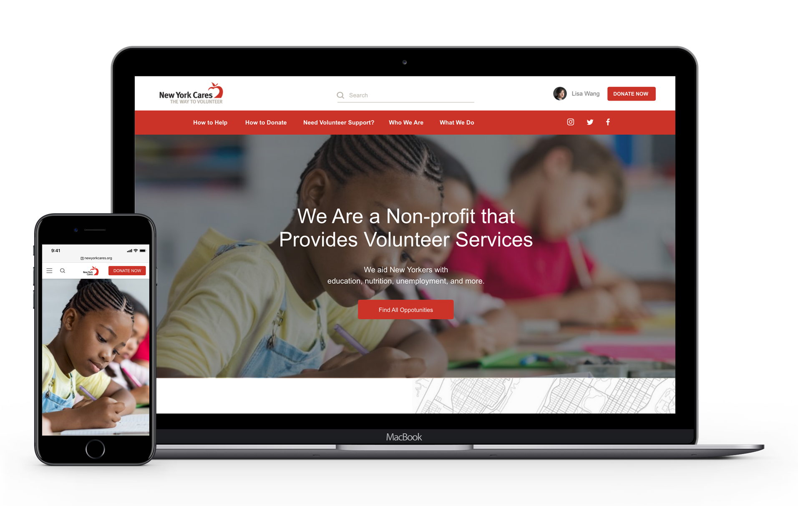TAKEAWAYS
The search page is a typical feature for users to search and refine their volunteer opportunities. They will need an easy process to know how to sort the volunteer jobs. In general, the result list is organized from newest to oldest by default. To improve this function, we should consider about the advance search regarding how to union, intersect, or except the criteria. Users can change this and sort their volunteer jobs more specific and list them by work type, by location, by date and time, or by public transportation. And if users want to register more than one job and they need to make a bulk booking, it is notably more useful to lean the searching process flow.